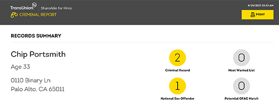

Nanny Background Check Services
Nanny background checks can help parents hire a trustworthy caregiver for their children.
Here’s what you get with ShareAble® for Hires nanny background check services:
National Criminal Report

Run a criminal history check and receive accurate results from both state and national databases, including the National Sex Offender Public Registry and the FBI’s Most Wanted. Learn more about our Criminal Reports
Detailed Credit Report

Assess FCRA-regulated data in your prospective nanny’s credit report. Learn more about our Credit Reports
Identity Report
Make sure you know who you’re hiring with a nanny identity report, which provides name, address, social security number, and Date of birth verification. Learn more about our Identity Reports